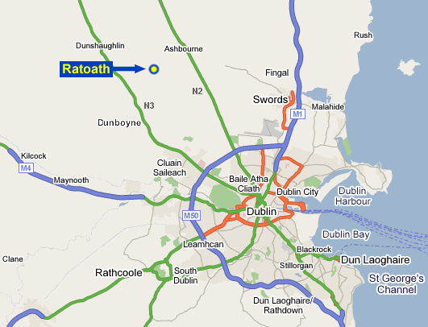

The Ratoath Community Centre is located in the town of Ratoath, County Meath. Ratoath can be easily reached via the N2 or N3 roads via the M50 Dublin ring road.
Follow Motorway (M1) and Road (N1) to Drogheda. Follow signs to Duleek to leave by Mary Street (R125), proceed for 10-15 mins. Procedd on this road until you get to the junction with the main N2 road. At junction with N2 turn Left (signposted Dublin). Proceed along the N2 and Turn right at junction with R155 (signposted Ratoath). When you get to Ratoath village, go through the first traffic lights, take a left at the next Tjunction and the centre is on your left hand side.
From the City Centre take N3 towards Navan, passing Blanchardstown Shopping Centre on your left. Proceed for approx. 6 miles to a sign for Ratoath. Turn right onto R155 and proceed for 5-6 miles which will bring you directly into Ratoath village. At the first T junction take a right and the community centre will be on your left hand side.
After Enfield take Motorway (M4) Dublin. At roundabout(signposted M50) Northbound) take first exit to join Motorway (M50). Proceed through toll bridge exiting onto N3 (Cavan/Navan). At next roundabout (edge of Blanchardstown) proceed forward for approx. 6 miles to a sign for Ratoath. Turn right onto R155 and proceed for 5-6 miles which will bring you directly into Ratoath village. At the first T junction take a right and the community centre will be on your left hand side.
Take N7 towards Dublin, at Red Cow roundabout take M50 Northbound. Proceed through toll bridge exiting onto N3 (Cavan/Navan). At next roundabout (edge of Blanchardstown) proceed forward for approx. 6 miles to a sign for Ratoath. Turn right onto R155 and proceed for 5-6 miles which will bring you directly into Ratoath village. At the first Tjunction take a right and the community centre will be on your left hand side.